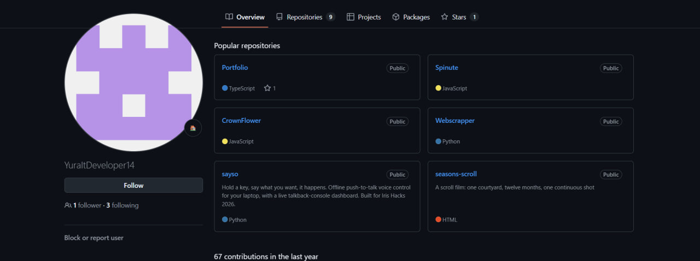
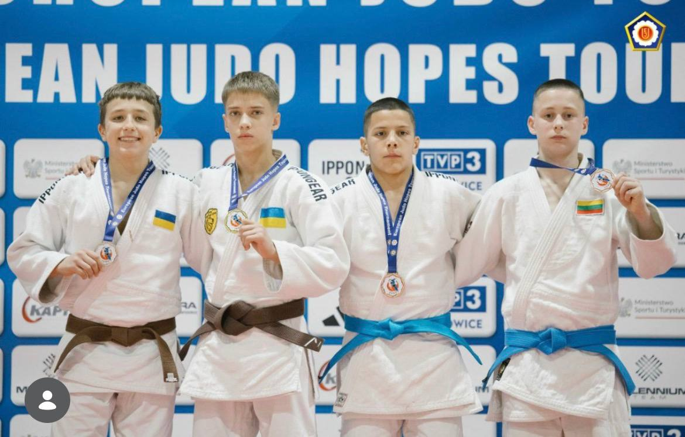
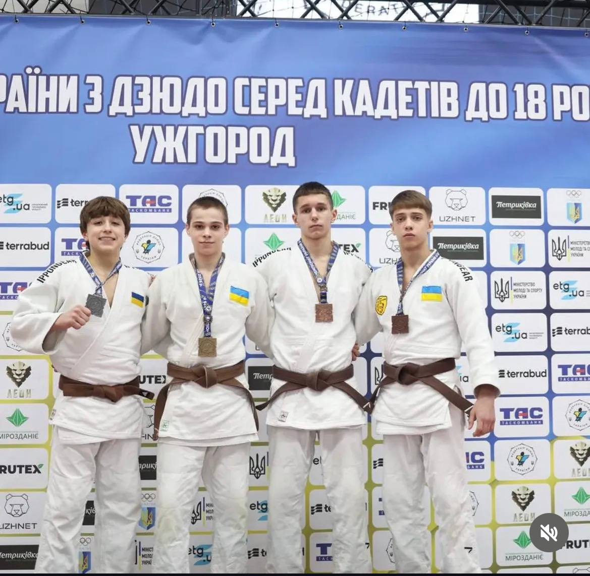
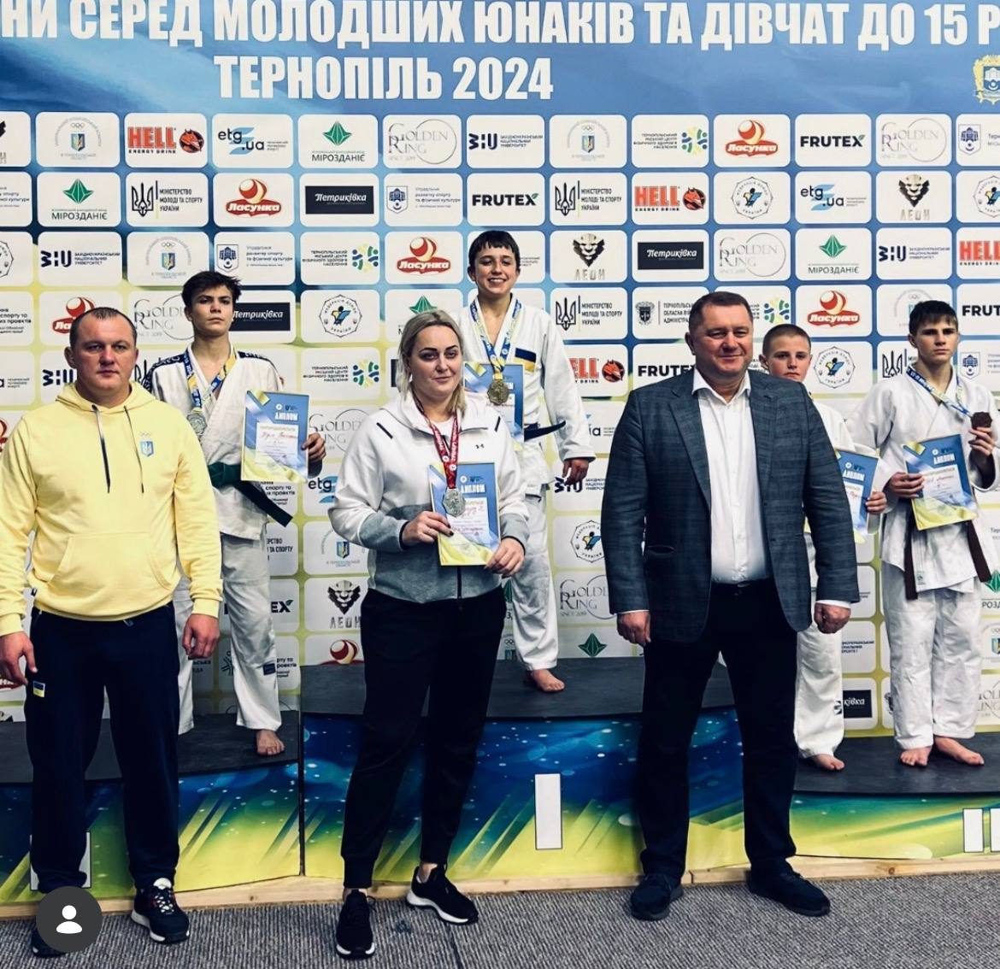
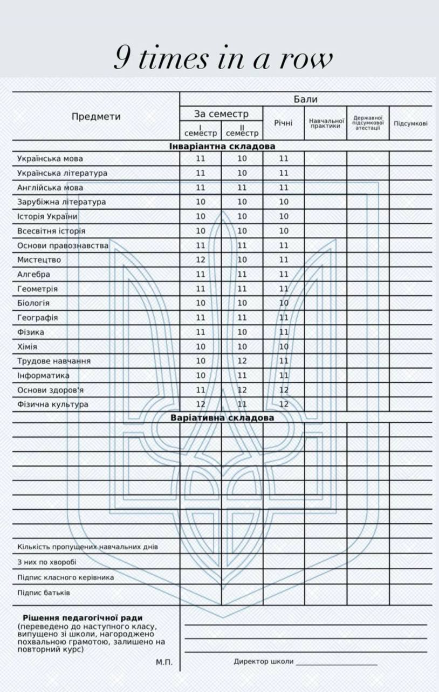
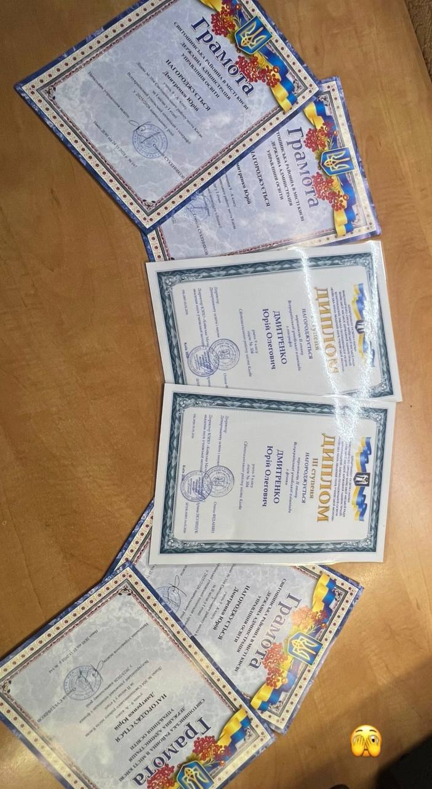

Дмитренко Юрій
Чому я успішний
Три напрями. У кожному — результат, який можна перевірити: репозиторій, протокол змагань, табель.
Мене звати Юрій Дмитренко. Я не вибирав між кодом, татамі й школою — я взяв усі три й тягну їх паралельно вже кілька років. Нижче — те, що з цього вийшло.
Код
Це давно перестало бути хобі. Хобі кидають, коли перестає виходити.
На GitHub у мене дев'ять публічних репозиторіїв — від скрол-фільму на чистому HTML до офлайнового голосового керування ноутбуком з живою консоллю. Різні мови, різні задачі: TypeScript, JavaScript, Python, HTML.
Головне тут не кількість, а швидкість. Те, що рік тому забирало тиждень, зараз забирає вечір. Я приходжу до цього щодня, а не коли є настрій — і саме через це крива йде вгору, а не вбік.

Дзюдо
П'ять нагород чемпіонатів України та Кубка Європи. Кожна — з протоколом і фото з п'єдесталу.
- Золото Чемпіон України з дзюдо вікова категорія U15
- Срібло Кубок Європи Польща
- Срібло Чемпіонат України з дзюдо вікова категорія U18
- Бронза Чемпіонат України з дзюдо вікова категорія U15
- Бронза Чемпіонат України з дзюдо вікова категорія U17



Дзюдо дало мені те, чого не дає жоден курс: звичку виходити на наступну сутичку після програної. У коді це та сама навичка — просто замість татамі термінал.
Навчання
Дев'ять років поспіль — відмінник. Дев'ять похвальних листів, один за кожен рік.
Навчання в мене на першому місці. Тренування можна перенести, дедлайн у проєкті — посунути. Школу — ні. Це та рамка, всередині якої вміщується решта.
У табелі — десятки, одинадцятки й дванадцятки по всій інваріантній складовій: від української та англійської до алгебри, фізики й інформатики. Не одна сильна предметна лінія, а рівний результат по всьому.


Три речі, одна звичка
Спільне в них одне — щоденне повторення без гарантії, що сьогодні щось вийде. У дзюдо це кидок, який робиш тисячу разів, щоб один раз він спрацював на чемпіонаті. У коді — баг, на який витрачаєш чотири години, щоб наступного разу знайти такий самий за чотири хвилини. У школі — просто не пропускати.
Це одна й та сама навичка. Я тренував її дев'ять років одразу в трьох місцях — тому вона працює.
Дмитренко Юрій